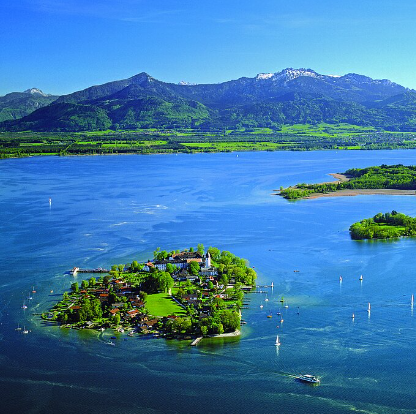
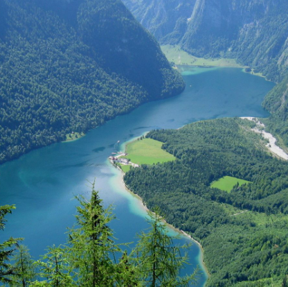
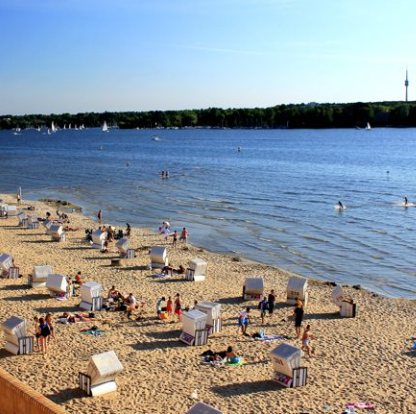
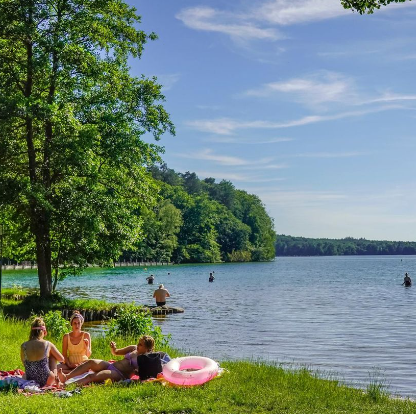
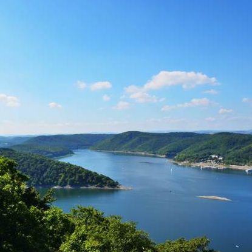
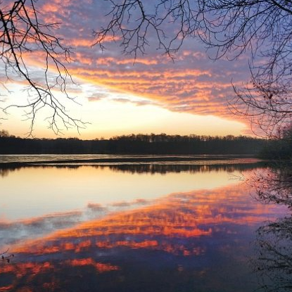
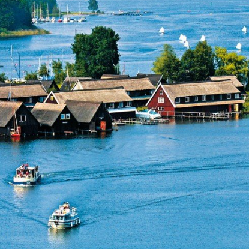
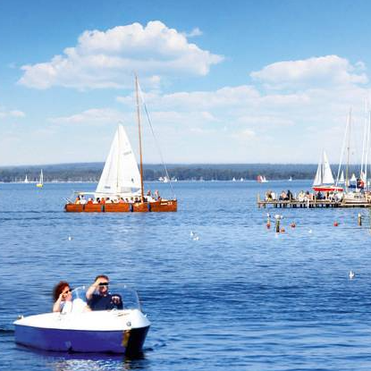

Lake Chiemsee – Located in Bavaria, it's often referred to as the
"Bavarian Sea." The
best time to visit is during the summer, from June to August, for boat trips and
exploring the islands.

Lake Königssee – Also in Bavaria, this crystal-clear alpine lake is
surrounded by
mountains. Visit between May and October for scenic hikes and boat tours.

Lake Wannsee – Located in Berlin, it's a popular spot for swimming and
sunbathing. Best
visited in summer, from June to September.

Lake Stechlinsee – Found in Brandenburg, this lake is famous for its
clear water. Visit
from May to September for hiking and swimming.

Lake Edersee – Situated in Hesse, it's ideal for water sports and
nature lovers. The
best time to visit is from May to September.

Lake Öjendorfer See – Located near Hamburg, it's great for family
outings and picnics.
Visit between June and September for pleasant weather.

Lake Müritz – Germany's largest inland lake, located in
Mecklenburg-Vorpommern. Best
visited in late spring or early autumn for quieter surroundings and ideal weather.

Lake Steinhuder Meer – Situated in Lower Saxony, it's perfect for
sailing and cycling.
The best time to visit is from May to September.
About Us
Things To Do In Germany is a website that provides information about the most beautiful places in
Germany. We are
a team of travel enthusiasts who want to share our experiences with you. We hope you enjoy our
website!
Our Team
I'm Thiago, born in Brazil and living in Berlin since 2019. I'm a career
switcher, giving it myall to break into tech. From one job interview to the next,
through bootcamps again and again,
I keep networking. I keep pushing forward.